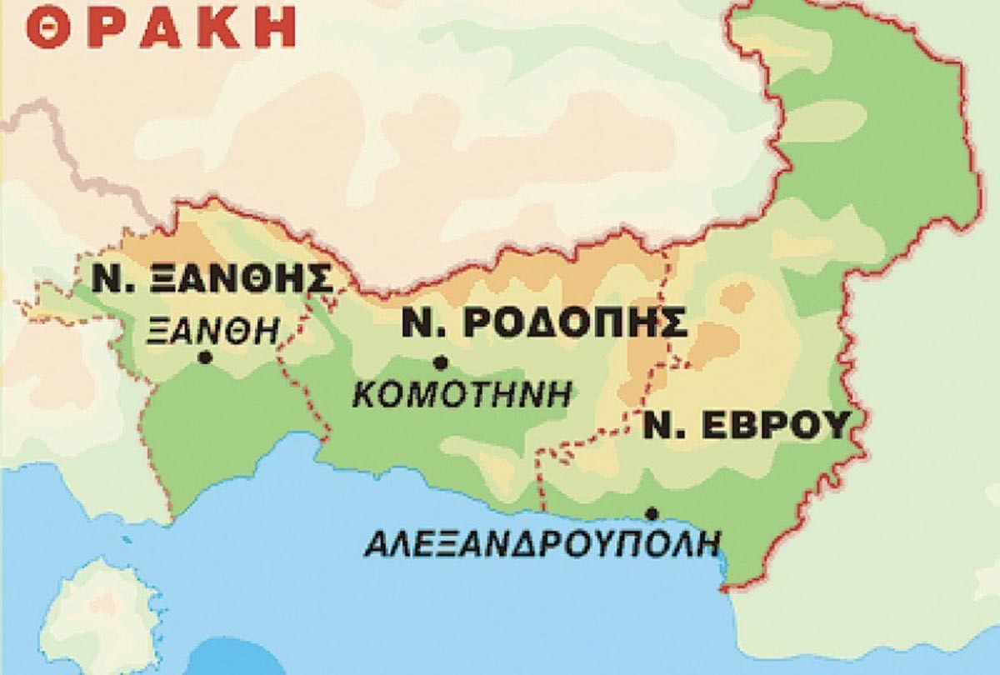

Θρακική κουζίνα

Αρχική|
Κυκλαδίτικη κουζίνα |
Μακεδονική κουζίνα |
Eπτανησιακη κουζινα |
Θρακική κουζίνα |
Ηπειρωτική κουζίνα|
Κρητική κουζίνα|
Η κουζίνα της Θεσσαλίας|
Παραδοσιακά φαγητά της Θράκης
- Λαχανία με χοιρινό
- Καβουρμάς
- Κολοκυθόπιτα Στριφτη
- Κοτοπουλο με Λάχανο Τουρσί
- Σαραγλί
- Λαγγίτες(τηγανίτες)
- Μικίκια(λουκουμάδες)
- Μιλινάκια(γκεζλεμέδες)
Συνταγές
Κολοκυθόπιτα Στριφτη
Μικίκια(λουκουμάδες)
Λαγγίτες(τηγανίτες)